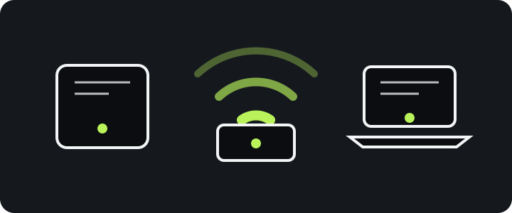
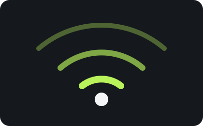

ANDROID · GALAXY · WI-FI
안녕하세요, nj입니다.
삼성전자 Wi-Fi S/W 엔지니어로서 안드로이드 갤럭시 모바일 S/W를 개발합니다.
ABOUT
연결을 더 단단하게.
모바일 경험의 기반이 되는 연결성과 안정성을 고민합니다.

PROJECTS
수많은 핸드폰 출시
안드로이드 갤럭시 모바일 S/W 개발 경험을 바탕으로 제품 출시를 함께했습니다.
Galaxy S
Galaxy S · S2 · S3 · S4 · S5 · S6 · S6 edge · S6 edge+ · S7 · S7 edge · S8 · S8+ · S9 · S9+ · S10e · S10 · S10+ · S10 5G · S20 · S20+ · S20 Ultra · S20 FE · S21 · S21+ · S21 Ultra · S21 FE · S22 · S22+ · S22 Ultra · S23 · S23+ · S23 Ultra · S23 FE · S24 · S24+ · S24 Ultra · S24 FE · S25 · S25+ · S25 Ultra · S25 Edge · S25 FE · S26 · S26+ · S26 Ultra
Galaxy Z Fold
Galaxy Fold · Z Fold2 · Z Fold3 · Z Fold4 · Z Fold5 · Z Fold6 · Z Fold Special Edition · Z Fold7 · Z Fold8 · Z Fold8 Ultra
Galaxy Z Flip
Galaxy Z Flip · Z Flip 5G · Z Flip3 · Z Flip4 · Z Flip5 · Z Flip6 · Z Flip7 · Z Flip7 FE · Z Flip8
일반 공개 모델명 기준이며 지역·통신사·메모리·색상별 SKU는 제외했습니다. 2026-07-29 기준. Samsung S Series 안내 · Samsung Z Series 발표
EXPERIENCE
Wi-Fi S/W Engineering
삼성전자 Wi-Fi S/W 엔지니어로서 안정적인 모바일 연결 경험을 개발합니다.
Wi-Fi Aware (NAN)
Wi-Fi Aware는 주변 기기를 직접 발견하고 연결하는 Android 기반의 최신 연결 기술입니다.
구글·애플·마이크로소프트·인텔 등과 협업 중입니다. 구체적인 협업 내용은 기밀로 공개하지 않습니다.
Android Wi-Fi Aware 공식 문서
RESEARCH
연결을 더 단단하게.
모바일 경험의 기반이 되는 연결성과 사용성을 꾸준히 탐구합니다.
GAMES
심심해
먹이를 먹고 길어지며, 랜덤하게 움직이는 적을 피하세요.
방향키 또는 WASD로 이동 · P로 일시정지 · 먹이는 초록색, 적은 주황색입니다.
지뢰찾기
쉬움 · 9×9 · 지뢰 10개
칸을 눌러 시작하세요.
칸을 눌러 열기 · 깃발 모드로 지뢰 표시 · 지뢰를 모두 피하고 안전한 칸을 여세요.
갤러그 스타일 비행기
쉬운 기본 난이도 · 적을 격추하세요.
시작을 눌러 출격하세요.
←/→ 또는 A/D로 이동 · Space로 발사 · 모바일 버튼을 사용할 수 있습니다.
CONTACT
Keep in touch.
이메일과 소셜 링크는 비공개로 유지합니다.